NOTICE
The examples are made for desktops, the layout might be deformed or cropped if viewed on a mobile device.
Web Applications
Designs for most Single-page Applications or Progressive Web Applications.
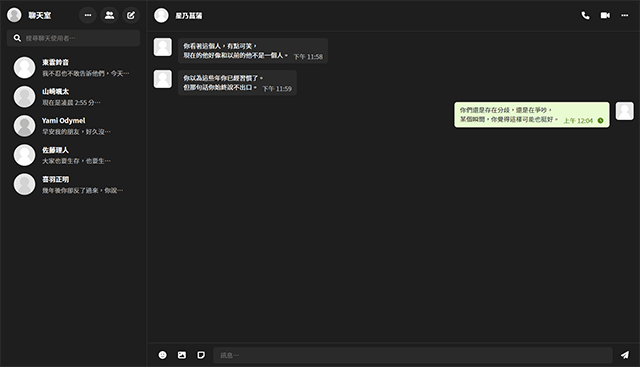
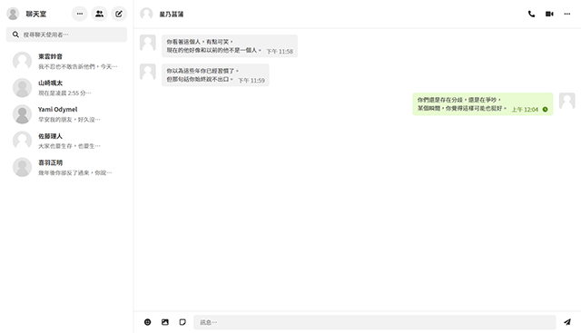


Chatroom
A basic chat room implemented through dialogue bubbles and basic layout.
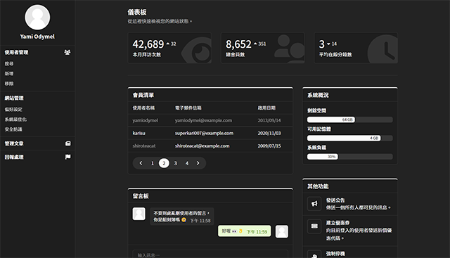
Dashboard
Administration backend with a sidebar.
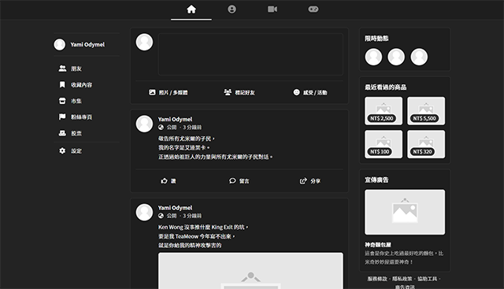
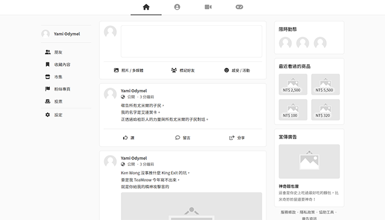
Feed
A timeline that contains the posts and side information.
Inbox
Online mail inbox with several file attachments.
Network Drive
Cloud drive that organizes files by card.
Blog Editor
A personal blog editor that works with Simple Markdown Editor.
Websites
Examples of commercial or personal websites.


Blog
A personal blog site composed of text elements and some featuring cards.
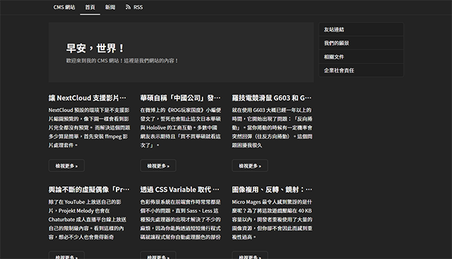

CMS
Small business website front page for group and corporate announcements.
 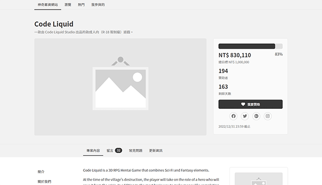
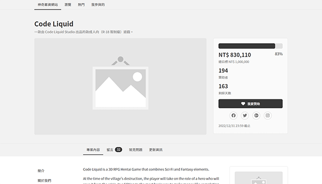
Crowdfunding
Platform made with Grid system and Images for crowdfunding.
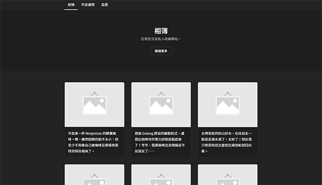
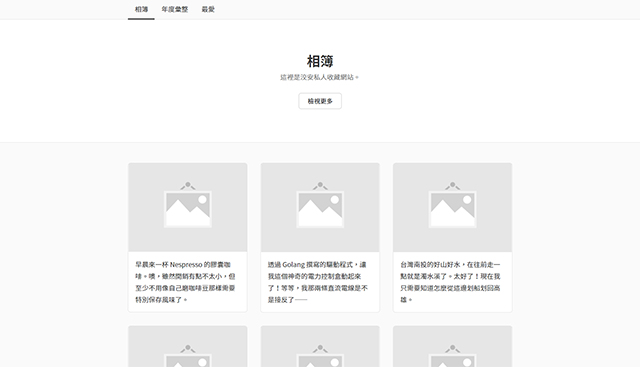
Gallery
A static website presenting travel photos.


News
An information aggregation site with featuring news and multiple posts.
 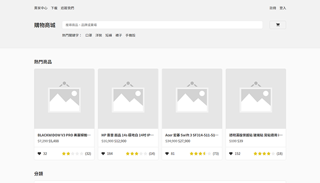
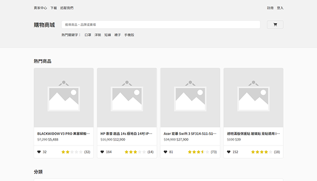
Shopping
Shopping site with information and reviews of many products.
Generals
Accessibility tools and other single pages.


Checkout Form
A form page that displays details such as shopping cart items and checkout addresses.


Stock Management
Table with span columns that act like an expandable detail to edit the stock information.
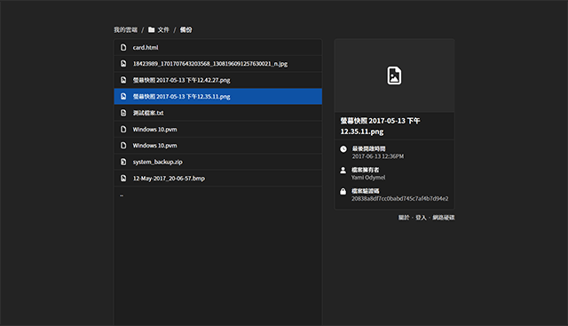

File List
A simpler example of network hard drive directory and file information, similar to FTP.


Invoice
It is used for e-invoices or invoices issued between companies.
 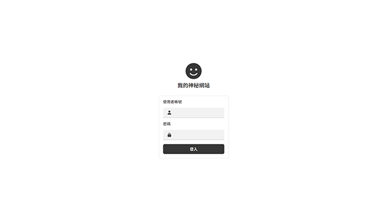
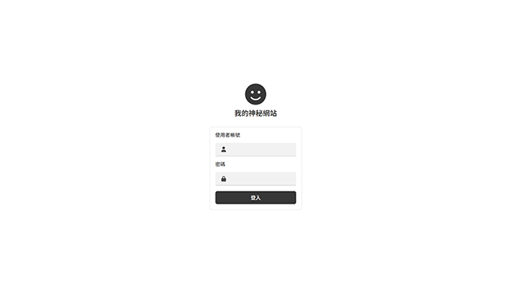
Login Form
The basic account and password login page.
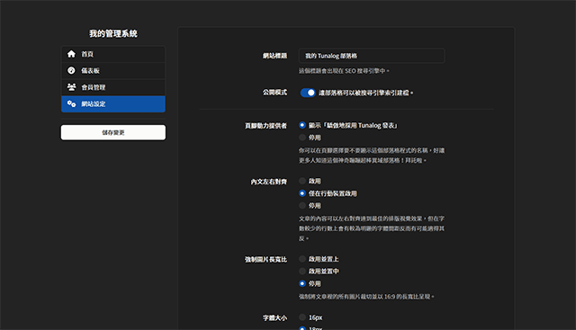

Preferences
System settings form for the website or service backend.


Mail Template
Promotional emails sent to members of the website.


Payment Form
Credit card information form for product checkout.
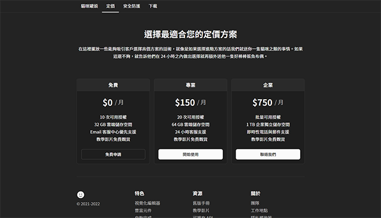

Pricing Plans
Several different price plans for customers.


Registration
A basic user registration page with information such as gender, birthday, nickname, etc.